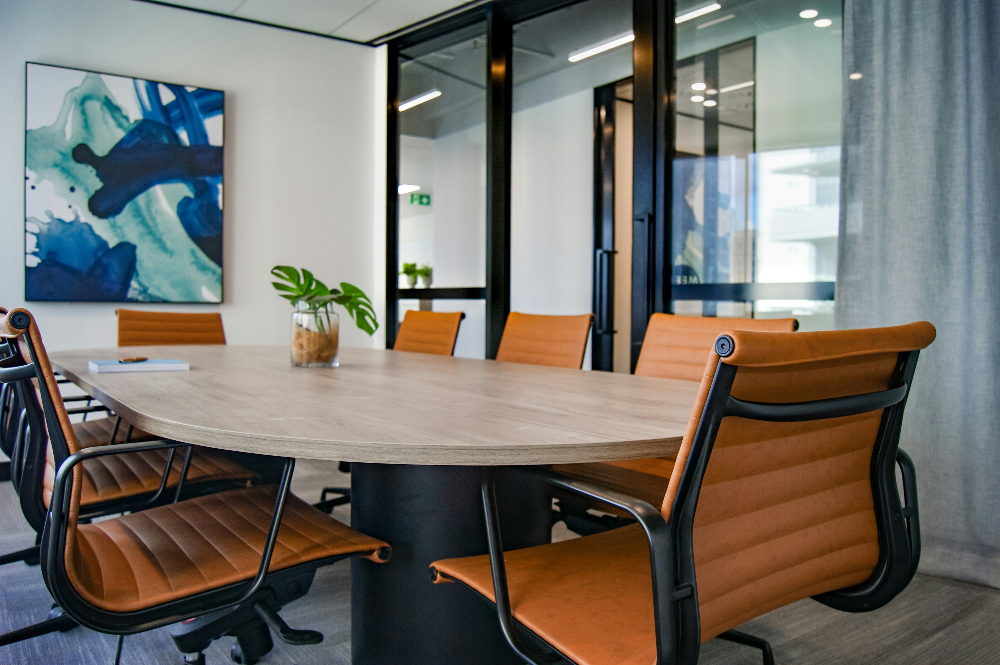
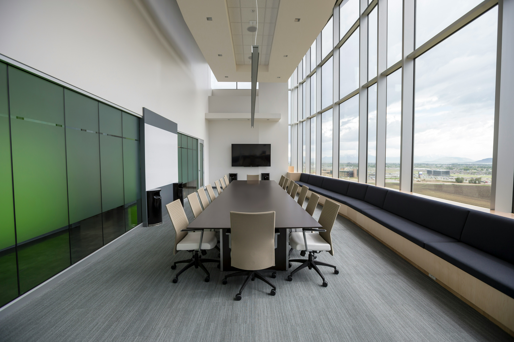

Scroll
Overview
Through our affiliated entity, Regis and Savoy Corporate Services LLP, clients have access to specialised corporate advisory services that complement our wealth management offering. These services are independently provided by the LLP and support businesses through every stage of their lifecycle, from incorporation and governance to regulatory compliance, legal advisory, and strategic business restructuring.

Capabilities
Providing practical legal support to help businesses navigate commercial, employment, and regulatory matters.
Supporting businesses through every stage of growth, restructuring, and strategic expansion.
Helping organisations establish robust governance frameworks and meet evolving regulatory requirements.
Delivering independent advisory solutions to strengthen governance, mitigate risks, and support informed decision-making.